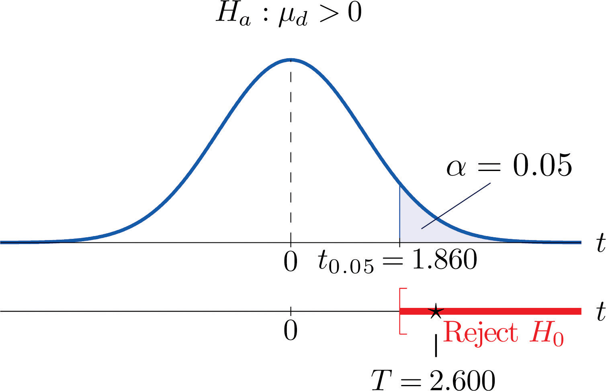
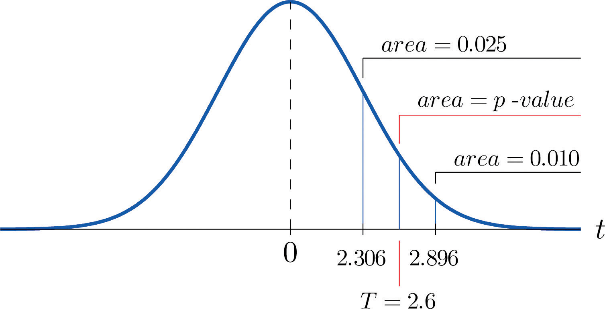

Suppose chemical engineers wish to compare the fuel economy obtained by two different formulations of gasoline. Since fuel economy varies widely from car to car, if the mean fuel economy of two independent samples of vehicles run on the two types of fuel were compared, even if one formulation were better than the other the large variability from vehicle to vehicle might make any difference arising from difference in fuel difficult to detect. Just imagine one random sample having many more large vehicles than the other. Instead of independent random samples, it would make more sense to select pairs of cars of the same make and model and driven under similar circumstances, and compare the fuel economy of the two cars in each pair. Thus the data would look something like Table 9.1 "Fuel Economy of Pairs of Vehicles", where the first car in each pair is operated on one formulation of the fuel (call it Type 1 gasoline) and the second car is operated on the second (call it Type 2 gasoline).
Table 9.1 Fuel Economy of Pairs of Vehicles
| Make and Model | Car 1 | Car 2 |
|---|---|---|
| Buick LaCrosse | 17.0 | 17.0 |
| Dodge Viper | 13.2 | 12.9 |
| Honda CR-Z | 35.3 | 35.4 |
| Hummer H 3 | 13.6 | 13.2 |
| Lexus RX | 32.7 | 32.5 |
| Mazda CX-9 | 18.4 | 18.1 |
| Saab 9-3 | 22.5 | 22.5 |
| Toyota Corolla | 26.8 | 26.7 |
| Volvo XC 90 | 15.1 | 15.0 |
The first column of numbers form a sample from Population 1, the population of all cars operated on Type 1 gasoline; the second column of numbers form a sample from Population 2, the population of all cars operated on Type 2 gasoline. It would be incorrect to analyze the data using the formulas from the previous section, however, since the samples were not drawn independently. What is correct is to compute the difference in the numbers in each pair (subtracting in the same order each time) to obtain the third column of numbers as shown in Table 9.2 "Fuel Economy of Pairs of Vehicles" and treat the differences as the data. At this point, the new sample of differences in the third column of Table 9.2 "Fuel Economy of Pairs of Vehicles" may be considered as a random sample of size n = 9 selected from a population with mean This approach essentially transforms the paired two-sample problem into a one-sample problem as discussed in the previous two chapters.
Table 9.2 Fuel Economy of Pairs of Vehicles
| Make and Model | Car 1 | Car 2 | Difference |
|---|---|---|---|
| Buick LaCrosse | 17.0 | 17.0 | 0.0 |
| Dodge Viper | 13.2 | 12.9 | 0.3 |
| Honda CR-Z | 35.3 | 35.4 | −0.1 |
| Hummer H 3 | 13.6 | 13.2 | 0.4 |
| Lexus RX | 32.7 | 32.5 | 0.2 |
| Mazda CX-9 | 18.4 | 18.1 | 0.3 |
| Saab 9-3 | 22.5 | 22.5 | 0.0 |
| Toyota Corolla | 26.8 | 26.7 | 0.1 |
| Volvo XC 90 | 15.1 | 15.0 | 0.1 |
Note carefully that although it does not matter what order the subtraction is done, it must be done in the same order for all pairs. This is why there are both positive and negative quantities in the third column of numbers in Table 9.2 "Fuel Economy of Pairs of Vehicles".
When the population of differences is normally distributed the following formula for a confidence interval for is valid.
where there are n pairs, is the mean and sd is the standard deviation of their differences.
The number of degrees of freedom is
The population of differences must be normally distributed.
Using the data in Table 9.1 "Fuel Economy of Pairs of Vehicles" construct a point estimate and a 95% confidence interval for the difference in average fuel economy between cars operated on Type 1 gasoline and cars operated on Type 2 gasoline.
Solution:
We have referred to the data in Table 9.1 "Fuel Economy of Pairs of Vehicles" because that is the way that the data are typically presented, but we emphasize that with paired sampling one immediately computes the differences, as given in Table 9.2 "Fuel Economy of Pairs of Vehicles", and uses the differences as the data.
The mean and standard deviation of the differences are
The point estimate of is
In words, we estimate that the average fuel economy of cars using Type 1 gasoline is 0.14 mpg greater than the average fuel economy of cars using Type 2 gasoline.
To apply the formula for the confidence interval, we must find The 95% confidence level means that so that From Figure 12.3 "Critical Values of ", in the row with the heading we read that Thus
We are 95% confident that the difference in the population means lies in the interval , in the sense that in repeated sampling 95% of all intervals constructed from the sample data in this manner will contain Stated differently, we are 95% confident that mean fuel economy is between 0.01 and 0.27 mpg greater with Type 1 gasoline than with Type 2 gasoline.
Testing hypotheses concerning the difference of two population means using paired difference samples is done precisely as it is done for independent samples, although now the null and alternative hypotheses are expressed in terms of instead of Thus the null hypothesis will always be written
The three forms of the alternative hypothesis, with the terminology for each case, are:
| Form of | Terminology |
|---|---|
| Left-tailed | |
| Right-tailed | |
| Two-tailed |
The same conditions on the population of differences that was required for constructing a confidence interval for the difference of the means must also be met when hypotheses are tested. Here is the standardized test statistic that is used in the test.
where there are n pairs, is the mean and sd is the standard deviation of their differences.
The test statistic has Student’s t-distribution with degrees of freedom.
The population of differences must be normally distributed.
Using the data of Table 9.2 "Fuel Economy of Pairs of Vehicles" test the hypothesis that mean fuel economy for Type 1 gasoline is greater than that for Type 2 gasoline against the null hypothesis that the two formulations of gasoline yield the same mean fuel economy. Test at the 5% level of significance using the critical value approach.
Solution:
The only part of the table that we use is the third column, the differences.
Step 1. Since the differences were computed in the order , better fuel economy with Type 1 fuel corresponds to Thus the test is
(If the differences had been computed in the opposite order then the alternative hypotheses would have been )
Step 2. Since the sampling is in pairs the test statistic is
Step 3. We have already computed and sd in the previous example. Inserting their values and into the formula for the test statistic gives
Step 5. As shown in Figure 9.5 "Rejection Region and Test Statistic for " the test statistic falls in the rejection region. The decision is to reject H0. In the context of the problem our conclusion is:
Figure 9.5 Rejection Region and Test Statistic for Note 9.20 "Example 8"
The data provide sufficient evidence, at the 5% level of significance, to conclude that the mean fuel economy provided by Type 1 gasoline is greater than that for Type 2 gasoline.
Perform the test of Note 9.20 "Example 8" using the p-value approach.
Solution:
The first three steps are identical to those in Note 9.20 "Example 8".
Step 4. Because the test is one-tailed the observed significance or p-value of the test is just the area of the right tail of Student’s t-distribution, with 8 degrees of freedom, that is cut off by the test statistic T = 2.600. We can only approximate this number. Looking in the row of Figure 12.3 "Critical Values of " headed , the number 2.600 is between the numbers 2.306 and 2.896, corresponding to t0.025 and t0.010.
The area cut off by t = 2.306 is 0.025 and the area cut off by t = 2.896 is 0.010. Since 2.600 is between 2.306 and 2.896 the area it cuts off is between 0.025 and 0.010. Thus the p-value is between 0.025 and 0.010. In particular it is less than 0.025. See Figure 9.6.
Figure 9.6 P-Value for Note 9.21 "Example 9"
Step 5. Since 0.025 < 0.05, so the decision is to reject the null hypothesis:
The data provide sufficient evidence, at the 5% level of significance, to conclude that the mean fuel economy provided by Type 1 gasoline is greater than that for Type 2 gasoline.
The paired two-sample experiment is a very powerful study design. It bypasses many unwanted sources of “statistical noise” that might otherwise influence the outcome of the experiment, and focuses on the possible difference that might arise from the one factor of interest.
If the sample is large (meaning that n ≥ 30) then in the formula for the confidence interval we may replace by For hypothesis testing when the number of pairs is at least 30, we may use the same statistic as for small samples for hypothesis testing, except now it follows a standard normal distribution, so we use the last line of Figure 12.3 "Critical Values of " to compute critical values, and p-values can be computed exactly with Figure 12.2 "Cumulative Normal Probability", not merely estimated using Figure 12.3 "Critical Values of ".
In all exercises for this section assume that the population of differences is normal.
Use the following paired sample data for this exercise.
Use the following paired sample data for this exercise.
Use the following paired sample data for this exercise.
Use the following paired sample data for this exercise.
Each of five laboratory mice was released into a maze twice. The five pairs of times to escape were:
| Mouse | 1 | 2 | 3 | 4 | 5 |
|---|---|---|---|---|---|
| First release | 129 | 89 | 136 | 163 | 118 |
| Second release | 113 | 97 | 139 | 85 | 75 |
Eight golfers were asked to submit their latest scores on their favorite golf courses. These golfers were each given a set of newly designed clubs. After playing with the new clubs for a few months, the golfers were again asked to submit their latest scores on the same golf courses. The results are summarized below.
| Golfer | 1 | 2 | 3 | 4 | 5 | 6 | 7 | 8 |
|---|---|---|---|---|---|---|---|---|
| Own clubs | 77 | 80 | 69 | 73 | 73 | 72 | 75 | 77 |
| New clubs | 72 | 81 | 68 | 73 | 75 | 70 | 73 | 75 |
A neighborhood home owners association suspects that the recent appraisal values of the houses in the neighborhood conducted by the county government for taxation purposes is too high. It hired a private company to appraise the values of ten houses in the neighborhood. The results, in thousands of dollars, are
| House | County Government | Private Company |
|---|---|---|
| 1 | 217 | 219 |
| 2 | 350 | 338 |
| 3 | 296 | 291 |
| 4 | 237 | 237 |
| 5 | 237 | 235 |
| 6 | 272 | 269 |
| 7 | 257 | 239 |
| 8 | 277 | 275 |
| 9 | 312 | 320 |
| 10 | 335 | 335 |
In order to cut costs a wine producer is considering using duo or 1 + 1 corks in place of full natural wood corks, but is concerned that it could affect buyers’s perception of the quality of the wine. The wine producer shipped eight pairs of bottles of its best young wines to eight wine experts. Each pair includes one bottle with a natural wood cork and one with a duo cork. The experts are asked to rate the wines on a one to ten scale, higher numbers corresponding to higher quality. The results are:
| Wine Expert | Duo Cork | Wood Cork |
|---|---|---|
| 1 | 8.5 | 8.5 |
| 2 | 8.0 | 8.5 |
| 3 | 6.5 | 8.0 |
| 4 | 7.5 | 8.5 |
| 5 | 8.0 | 7.5 |
| 6 | 8.0 | 8.0 |
| 7 | 9.0 | 9.0 |
| 8 | 7.0 | 7.5 |
Engineers at a tire manufacturing corporation wish to test a new tire material for increased durability. To test the tires under realistic road conditions, new front tires are mounted on each of 11 company cars, one tire made with a production material and the other with the experimental material. After a fixed period the 11 pairs were measured for wear. The amount of wear for each tire (in mm) is shown in the table:
| Car | Production | Experimental |
|---|---|---|
| 1 | 5.1 | 5.0 |
| 2 | 6.5 | 6.5 |
| 3 | 3.6 | 3.1 |
| 4 | 3.5 | 3.7 |
| 5 | 5.7 | 4.5 |
| 6 | 5.0 | 4.1 |
| 7 | 6.4 | 5.3 |
| 8 | 4.7 | 2.6 |
| 9 | 3.2 | 3.0 |
| 10 | 3.5 | 3.5 |
| 11 | 6.4 | 5.1 |
A marriage counselor administered a test designed to measure overall contentment to 30 randomly selected married couples. The scores for each couple are given below. A higher number corresponds to greater contentment or happiness.
| Couple | Husband | Wife |
|---|---|---|
| 1 | 47 | 44 |
| 2 | 44 | 46 |
| 3 | 49 | 44 |
| 4 | 53 | 44 |
| 5 | 42 | 43 |
| 6 | 45 | 45 |
| 7 | 48 | 47 |
| 8 | 45 | 44 |
| 9 | 52 | 44 |
| 10 | 47 | 42 |
| 11 | 40 | 34 |
| 12 | 45 | 42 |
| 13 | 40 | 43 |
| 14 | 46 | 41 |
| 15 | 47 | 45 |
| 16 | 46 | 45 |
| 17 | 46 | 41 |
| 18 | 46 | 41 |
| 19 | 44 | 45 |
| 20 | 45 | 43 |
| 21 | 48 | 38 |
| 22 | 42 | 46 |
| 23 | 50 | 44 |
| 24 | 46 | 51 |
| 25 | 43 | 45 |
| 26 | 50 | 40 |
| 27 | 46 | 46 |
| 28 | 42 | 41 |
| 29 | 51 | 41 |
| 30 | 46 | 47 |
Large Data Set 5 lists the scores for 25 randomly selected students on practice SAT reading tests before and after taking a two-week SAT preparation course. Denote the population of all students who have taken the course as Population 1 and the population of all students who have not taken the course as Population 2.
http://www.gone.2012books.lardbucket.org/sites/all/files/data5.xls
Large Data Set 12 lists the scores on one round for 75 randomly selected members at a golf course, first using their own original clubs, then two months later after using new clubs with an experimental design. Denote the population of all golfers using their own original clubs as Population 1 and the population of all golfers using the new style clubs as Population 2.
http://www.gone.2012books.lardbucket.org/sites/all/files/data12.xls
Consider the previous problem again. Since the data set is so large, it is reasonable to use the standard normal distribution instead of Student’s t-distribution with 74 degrees of freedom.